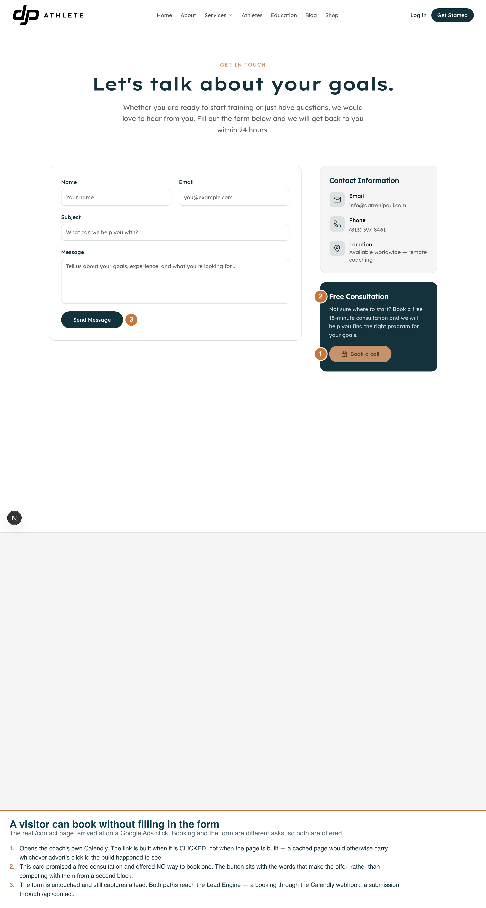
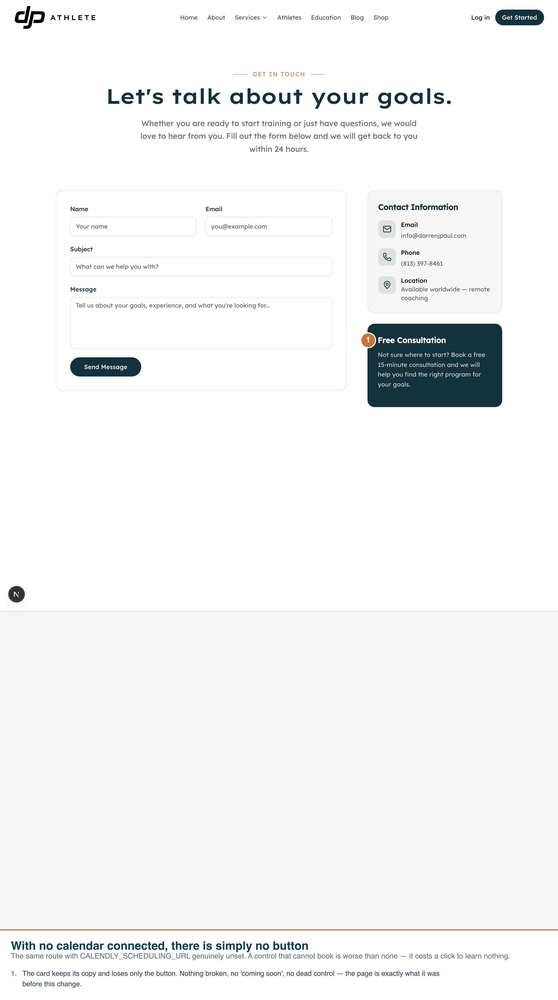

Both shots are the real /contact route in the running app. Annotations are burned into the PNGs. Captured 2026-09-05.

The button sits inside the existing Free Consultation card, which had promised a free 15-minute consultation and offered no way to book one. Putting the action beside the words that make the offer keeps it to one ask in one voice, rather than two competing blocks.
The href is built on click, not at render. This page is cached, so a link baked at build
time would carry whichever advert's click id the build happened to see. The capture script asserts the real
click id reaches the link, packed:
utm_content=gclid%3ASCREENSHOT_CLICK_ID — not as a raw ?gclid=, which Calendly
would accept and never return, leaving the booking looking organic while an ad paid for it.

The same route with CALENDLY_SCHEDULING_URL genuinely unset and the server
restarted — not an HTML response doctored at the edge, which would only be a picture of the regex that
doctored it. The card keeps its copy and loses only the button.
A control that cannot book is worse than none: it costs a visitor a click to learn nothing. The capture script fails loudly if a button is found in this state.